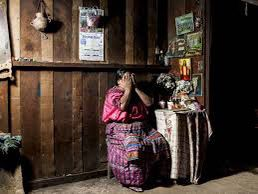
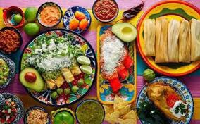
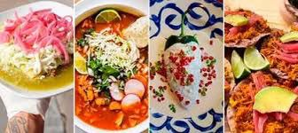

En Comunidad y Cocina nos preocupamos por ser un negocio inclusivo para aquellas personas que se encuentren en la pirámide (BoP) brindándoles una oportunidad de empleo y así puedan mejorar su calidad de vida, satisfaciendo dichas necesidades a través de su profesión como cocineros(as).
Recibimos a cocineros(as) de distintos lugares de la república mexicana para exponer los platillos de sus regiones y culturas, fomentando el crecimiento de la economía con oportunidades laborales.
Nuestra Misión
Comprometidos en satisfacer las necesidades gastronómicas de nuestros clientes, preparando alimentos de alta calidad con una atención personalizada, brindando oportunidades de empleo para disminuir la pobreza extrema en distintas partes de la república mexicana.
Objetivos:
Crear nuevos empleos
Sumarnos a la economía local y apoyar a las personas sin empleo
Ayudar al crecimiento del turismo y la gastronomía
Sucursales
Interlomas
Paseo Interlomas, Vialidad de la Barranca 6, Col. Ex Hacienda Jesús del Monte, Jesus del Monte, 52772 Huixquilucan de Degollado, Méx.
CDMX
Calz Sta Catarina 207, San Ángel Inn, Álvaro Obregón, 01060 Ciudad de México, CDMX
Guadalajara
C. Miguel Lerdo de Tejada 2418, Lafayette, 44150 Guadalajara, Jal.
Mérida
C. 57 x 62, Parque Santa Lucia, Centro, 97000 Mérida, Yuc.
BLOG
Colonias rurales...

¿Sabías que las colonias rurales sufren mucho por falta de empleos y malos tratos debido a la discriminación?
"Discriminar" a una persona significa tratarla de manera diferente, o menos favorable.
Gracias a la raza, color, religión, etc. Se niegan trabajos o bien al momento de conseguir sufren tratos injustos, hostigamientos represalias, entre otras injusticias.
Es por ello que nuestra empresa busca la manera de generar nuevos empleos beneficiando a personas necesitadas.
Gastronomía mexicana...

Cuando se habla de gastronomía mexicana no puedes evitar saborearte la boca, atrévete a probar un poco más de ella con nosotros.
La cocina mexicana es un conjunto de platos y técnicas culinarias mexicanas que forman parte de las tradiciones y la vida común de los habitantes del país, enriquecidas con los aportes de diferentes regiones del país, basadas en la experiencia mexicana prehispánica con la cocina europea, entre otros.
Nuestro restaurante brinda una gran variedad de deliciosos platillos hechos por manos sumamente expertas en la gastronomía mexicana.
5 Beneficios

5 beneficios de la gastronomía mexicana.
¡Olvida el remordimiento de comer tacos, mole, pozole y más!
Razones por las cuales comer comida mexicana además de que es deliciosa.
Integra todos los alimentos que se encuentran en el plato del buen comer.